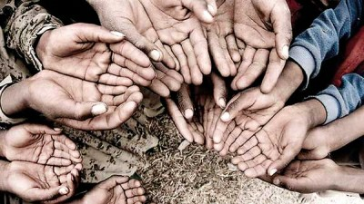

რეალურად რომ დავუკვირდეთ ყოველწლიურად ლარი თავის ღირებულებას კარგავს, ქართული ვალუტა უფროდაუფრო ღარიბდება, ფასები იზრდება, ხელფასები არ იცვლება, ხალხი იმაზე ცოტას იღებს ვიდრე იხარჯება, მოსახლეობას უფრო მეტად უჭირს, ვინაიდან ბიზნესის წამოწყება შეუძლებელია ჩვენს ქვეყანაში, რადგან თითქმის ყველა ბიზნესმენი პოლიტიკაშია და კერძო ბიზნესს არანაირი ფასი არ აქვს, ვინაიდან საქართველოს ეკონომიკური სისტემა ამგვარია:
ხელისუფლებას ფსონი იმპორტზე უდევს და არა ექსპორტზე, ფაქტობრივად საქართველოს მოსახლეობა უცხოეთიდან შემოტანილ ნაწარმს მოიხმარს, უცხო ინევსტორების ბიზნესები დომინირებს საქართველოში და თავისთავად მოგების უდიდესი ნაწილი მათ მიაქვთ, ხოლო საქართველოს ბიუჯეტს მხოლოდ ხურდის ფასს უხდიან. ქართულ მიწას, მრეწველობისთვის პატარა ტერიტორია აქვს, აქედან გამომდინარე უგუნური პოლიტიკოსები გვაჯერებენ რომ უცხოელი ინვესტორები, რომლებიც ინვესტიციებს დებენ საქართველოში, დიდი სიმდიდრე მოაქვთ ჩვენთვის, თუმცა ეს ასე არ არის.. მოსახლეობას უჭირს, უამრავი სესხები და კრედიტები აქვთ აღებული გაჭირვებისგან და ვერ აბრუნებენ და რაც გააჩნიათ სახელმწიფო იმასაც ართმევს(რაც გამოსავალი არ არის და პრობლემის მოგვარება ყოველთვის შეიძლება, ისე რომ არც ქვეყანა დაზარალდეს არც მოქალაქე), ძალიან ბევრი ოჯახია, ურიცხვი, რომელიც ქოხში ცხოვრობს, საერთოდ მოწყვეტილნი არიან სამყაროს, არ აქვთ ელემენტარული კარფანჯარა, ძალიან ბევრი მიტოვებული დედაშვილი, ან მარტო შვილი.. ოპოზიციური მედიებიდან ყოველთვის ვრცელდება ნიუსები, გაჭირვების მაჩვენებლის მატებასთან დაკავშირებით, ხელისუფლება კი უარჰყოფს და გვაჯერებს, რომ ბევრად კარგად ვცხოვრობთ ვიდრე რეალურადაა, რაც თავადაც კარგად იციან. ქალაქებში, ყოველ ფეხის ნაბიჯზე გაჭირვებული ბავშვები, ბებოები, საშუალო ასაკის ადამიანები გხვდება და დახმარებას ითხოვს, ეს კი ყველაზე ნათელი ფაქტია იმისა რომ ხელისუფლებას არ უყვარს საქართველო. თუ ბედნიერი ქვეყანა გინდა გერქვას, გაჭირვებული რომელსაც ბეტონზე სძინავს, გაშლილ ყუთზე, რომელსაც თავის დასაყუდებელი არ აქვს, შენ ვერ გერქმევა არათუ შენი პატრიოტი, არამედ ადამიანი!
სრულად